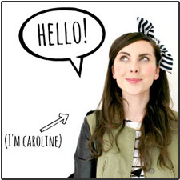
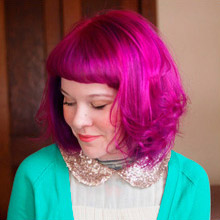
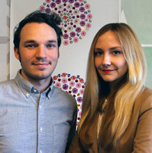

Scratch was born out of the simple idea that nail wraps are really cool but most of the designs currently out there are not. Scratch works as a platform for creatives of all backgrounds to share their art through a new medium and grow their audience.
My collection combines my love of pop art colour and playful approach to design. Nail art is a new and exciting arena to experiment in; I'm constantly looking for inspiration and patterns to inspire a new design. It comes in many forms from fashion catwalks to Japanese cartoons.
I hope this is reflected in my collection; for me nail art is a way to innovate, make a statement. but most importantly to have fun!
My collection of nail designs were inspired by my love of geometric shapes, bold lines, and monochromatic color schemes. With a little help from my friends, I came up with some silly puns to name them each.
Top 0 ' the Mountain to Ya, when I first looked at it reminded me of upside down mountains. (You've Got a) Spring in Your Step, with it's three shades of green is reminiscent of spring to me. Finally, Sea Ya Later, of course, reminds me of a great body of water with those prett shades of blue.
Flat Vernacular is a Brooklyn-based design company that specializes in original hand-drawn, hand-printed, and bespoke wallpapers.
We take great time and care with each project that comes to us. Keeping one foot firmly in fine art and one in design allows for our visual capabilities and design skills to remain expansive yet thoughtful. The idea behind our selection of patterns was to highlight three new versions of our current wallpaper patterns which all describe different enviornments: flora, mountains, and the city.
Every first Tuesday of the month SCRATCH releases a new Featured Artist limited edition collection of three nail wraps. Although these nail wraps are rad on their own, we wanted to offer the nail art enthusiast and everyday mani fan the ability to take them to the next level and so the Monthly Mani Box was born!